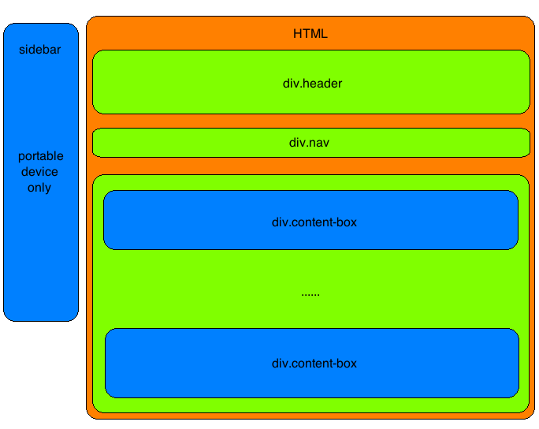
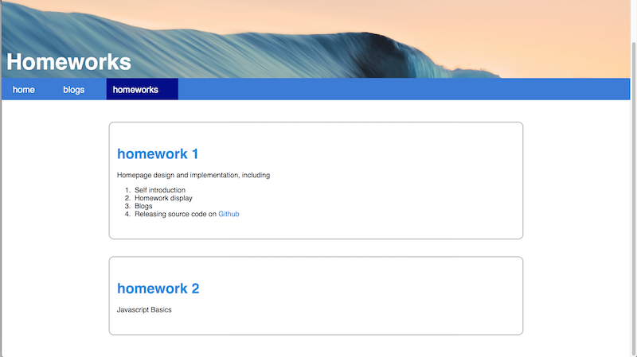
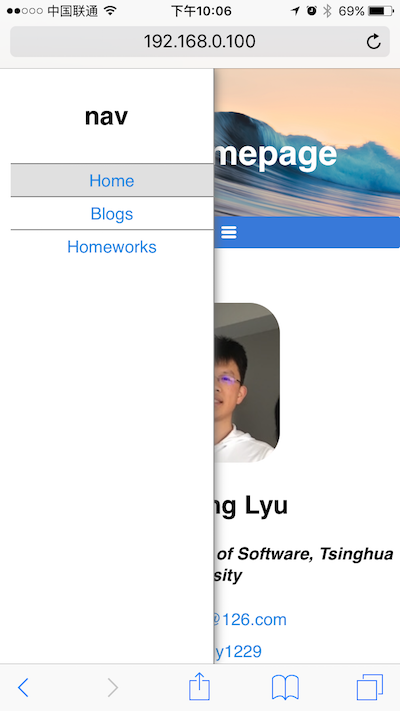

吕梦扬 软42
2014013452
lmy1229@126.com
结合课上所学HTML/CSS基础,设计实现自己的个人主页,需要包含若干内容.具体要求如下:
总体设计参照下图

div.header显示了网页头部的图片以及网页的标题div.nav是网页的导航栏. 导航栏上分为3个部分: home, blogs和homeworks.div.content-box是网页上一个个的条目,显示每一条的标题和相应的简略介绍. 点击标题能够进入相应的网页查看细节.sidebar是专门为小屏幕移动设备设计的元素, 在大屏幕设备上会隐藏. 平常时候sidebar会放在屏幕外的左边, 当用户点击导航栏div.nav上的某一个按钮时,便会激活移动到屏幕中.具体实现见后.根据设计实现的网页如下:

网页的自适应分为两种:
width = 100%或width = 80vw等语句来实现. 在这种情况下, 只是元素的大小在改变, 整体的布局并没有改变, 而是保持原样网页的CSS中使用了@media语句来进行自适应布局. 当前的规则是:
540px时,认为屏幕足够宽敞,可以完整显示.540px时,认为是移动设备(手机等),需要改变页面的布局本网页对于小屏幕的重新布局主要体现在导航栏div.nav上. 当屏幕宽度太小时, 页面中的文本内容可以换行, 对于视觉效果的影响比较小. 但是导航栏上的元素如果换行,就会对页面产生较大的影响. 因此, 在本网页上, 当网页察觉到环境是小屏幕时, 就会禁用掉div.nav上的原本3个元素, 启用sidebar. 当用户点击导航栏上的≡按钮时, sidebar会从网页的外部移动到网页中,替代原本导航栏的作用. 实现效果如下

经过测试, 本网页能够在Safari,Chrome和Microsoft Edge浏览器上完美运行, 在Firefox和Internet Explorer 11上完美显示界面,但是在移动端上某一些CSS动画无法正确播出, 但是不影响使用
homeworks界面用于显示作业报告的iframe的高度计算有问题. 这些bug需要修复本网页发布于lmy1229.github.io, 网页源码在这里